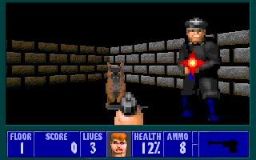

3D News
Jul - Sep 2001
September 30, 2001.
 New Wolf is an upcoming 15 level TC by Bobby Bucksnort. Many
of the levels are already done, but a lot of work still needs to be
done with the source code. It should be ready within a
month.
New Wolf is an upcoming 15 level TC by Bobby Bucksnort. Many
of the levels are already done, but a lot of work still needs to be
done with the source code. It should be ready within a
month.
There's a couple more pics here.
 Fred Kenny is making a new VSWAP for WolfUSA. This will
have a lot more variation in the wall designs than the current
version.
Fred Kenny is making a new VSWAP for WolfUSA. This will
have a lot more variation in the wall designs than the current
version.
September 28, 2001.
 Bobby Bucksnort has released The
Heinmakker Project.
There are five new levels and a number of graphics, sounds and source
code changes. Bobby worked on this with his late grandfather John,
and it's turned out to be a very good set.
Bobby Bucksnort has released The
Heinmakker Project.
There are five new levels and a number of graphics, sounds and source
code changes. Bobby worked on this with his late grandfather John,
and it's turned out to be a very good set.
 Fred Kenny has released yet another new VSWAP to go with the
maps from Wolffred. (The new maps were on episode three). This
one is called WolfUSA,
and is meant as a tribute to those who perished in the recent
terrorist tragedies in the USA. It looks quite effective at first,
however, as all the walls have the same red, white and blue colours,
they can become quite monotonous after a while.
Fred Kenny has released yet another new VSWAP to go with the
maps from Wolffred. (The new maps were on episode three). This
one is called WolfUSA,
and is meant as a tribute to those who perished in the recent
terrorist tragedies in the USA. It looks quite effective at first,
however, as all the walls have the same red, white and blue colours,
they can become quite monotonous after a while.
As with Fred's earlier sets, the full version of Wolf 3D is needed to play this one.
September 27, 2001.
 The Thirteenth Floor is a new add-on for the full version of
Wolf 3D. There are 6 new levels, including the secret one. If
you like mazes, then you'll like this set as there's quite a few
here. No new graphics and sounds but the author plans to update
these, and include many other features, in an upcoming set (see the
text file for more info).
The Thirteenth Floor is a new add-on for the full version of
Wolf 3D. There are 6 new levels, including the secret one. If
you like mazes, then you'll like this set as there's quite a few
here. No new graphics and sounds but the author plans to update
these, and include many other features, in an upcoming set (see the
text file for more info).
You can download it at Wolf 3D Disaster Zone. You can also get it here. Requires the full version of 'Wolf 3D' to play.
September 23, 2001.
 Matt Dadi has asked Florian Stöhr (creator of FloEdit)
about a program to convert the palettes from Corridor 7, Operation:
Body Count, Blake Stone, etc to Wolf 3D. Florian has said he'd check
it out when time allows, so maybe we'll have this feature in
FloEdit. Thanks Matt for this info.
Matt Dadi has asked Florian Stöhr (creator of FloEdit)
about a program to convert the palettes from Corridor 7, Operation:
Body Count, Blake Stone, etc to Wolf 3D. Florian has said he'd check
it out when time allows, so maybe we'll have this feature in
FloEdit. Thanks Matt for this info.
 For Mac users, my Mac/links
page has been updated. Four new links have been added, and four taken
out.
For Mac users, my Mac/links
page has been updated. Four new links have been added, and four taken
out.
September 16, 2001.
 The Wolf3D community suffered a huge loss yesterday with the sad news
that John Bucksnort has passed away. John and I exchanged many emails
during the last few years and we became very good friends. John loved
making add-ons and provided us with so many good ones. We will all
miss him very much. My condolences go to John's grandson Bobby
Bucksnort and his family in what must be a very difficult time for
them. Bobby told me he intends to carry on John's good work, and I
feel sure everyone will support him in this.
The Wolf3D community suffered a huge loss yesterday with the sad news
that John Bucksnort has passed away. John and I exchanged many emails
during the last few years and we became very good friends. John loved
making add-ons and provided us with so many good ones. We will all
miss him very much. My condolences go to John's grandson Bobby
Bucksnort and his family in what must be a very difficult time for
them. Bobby told me he intends to carry on John's good work, and I
feel sure everyone will support him in this.
 Pablo Dictter has released one last level for Wolf3D episode 2
called The
Last Floor.
Though it's only one level, it is a good one.
Pablo Dictter has released one last level for Wolf3D episode 2
called The
Last Floor.
Though it's only one level, it is a good one.
Pablo will now be concentrating on his DoomCenter site. Good luck, Pablo.
September 15, 2001.
 Games
For Solaris
(Solaris seems to be a Russian operating system) is by Vitaly Filatov
and has a section dedicated to Wolf 3D/Spear. It's in Russian
and English.
Games
For Solaris
(Solaris seems to be a Russian operating system) is by Vitaly Filatov
and has a section dedicated to Wolf 3D/Spear. It's in Russian
and English.
 Parafriction has started Neophytes
of Wolf and Spear.
Hopefully, it'll be 4th time lucky for this new Yahoo Club. As many
of you may know, the first three Neophyte clubs were deleted
by one of the founders or by somebody knowing the password of one of
the founders. Good luck with this one Parafriction!!
Parafriction has started Neophytes
of Wolf and Spear.
Hopefully, it'll be 4th time lucky for this new Yahoo Club. As many
of you may know, the first three Neophyte clubs were deleted
by one of the founders or by somebody knowing the password of one of
the founders. Good luck with this one Parafriction!!
September 12, 2001.
 John Bucksnort has released the first part of his latest Spear
add-on So
You Want To Be An Assassin.
There are three new well designed levels, plus many graphics, sounds
and source code changes. For copyright reasons, John has left out the
audiot and audiohead files so the full version of
Spear is required. Here's a pic I made, but there are
other
pics
John made earlier.
John Bucksnort has released the first part of his latest Spear
add-on So
You Want To Be An Assassin.
There are three new well designed levels, plus many graphics, sounds
and source code changes. For copyright reasons, John has left out the
audiot and audiohead files so the full version of
Spear is required. Here's a pic I made, but there are
other
pics
John made earlier.
September 9, 2001.
 Here's another Yahoo Club Wolf3D
BlakeStone Duke!!
It's been started by Ryan and deals mainly with the source
code.
Here's another Yahoo Club Wolf3D
BlakeStone Duke!!
It's been started by Ryan and deals mainly with the source
code.
 Ryan now has a website, and it's at Ryan's
Wolfenstein 3D Site.
There are links, pics, downloads and other info.
Ryan now has a website, and it's at Ryan's
Wolfenstein 3D Site.
There are links, pics, downloads and other info.
 Planet
Executor is
a new site by Viper (now known as Executor). It's not Wolf 3D
specific and is still under construction, but there's a lot
there already. You can download The Road To Despair add-on
from there.
Planet
Executor is
a new site by Viper (now known as Executor). It's not Wolf 3D
specific and is still under construction, but there's a lot
there already. You can download The Road To Despair add-on
from there.
 For fans of Blake Stone, Guy Brys has updated his
Guystone set and it now has 5 new episodes. You can download
it at Guy's
Home Page.
For fans of Blake Stone, Guy Brys has updated his
Guystone set and it now has 5 new episodes. You can download
it at Guy's
Home Page.
September 8, 2001.
 So that it can be stored on floppies, I posted Cuetips Revenge
in two parts, Part1
and Part2.
See under Sept 1 for the single zip version and info on the
set.
So that it can be stored on floppies, I posted Cuetips Revenge
in two parts, Part1
and Part2.
See under Sept 1 for the single zip version and info on the
set.
 If anyone's interested in the Acorn version of the game, here's what
the front cover looks like!!
If anyone's interested in the Acorn version of the game, here's what
the front cover looks like!!
There's a full size pic of the back cover here. Powerslave released this version in 1994, under licence from id software.
 Hellbaron's
Doom2 and Wolf3-D Lair
is a new site featuring both the games mentioned. There are many
sections in each, including downloads, links and lots of other
info.
Hellbaron's
Doom2 and Wolf3-D Lair
is a new site featuring both the games mentioned. There are many
sections in each, including downloads, links and lots of other
info.
 Here's an email from WDOS (now Ion Blade)...
Here's an email from WDOS (now Ion Blade)...
Hello all!
I have got a lot of news.
First, now I'm not WDOS, now I'm Ion Blade.
Second, why I didn't send anything for long time. My e-mail server now can't send mails to Wolfenstein 3D News.
Third, I've done 80% of Operation: Prison Runner (beta 0.10). Previous betas (0.01, 0.02, 0.03, 0.04) weren't public.
Fourth, I need two kinds of help: help with sounds and music, and help with source code: where is code of opening locked doors. My mail: wdos@narod.ru.
Goodbye.
-Ion Blade
P.S. if wdos@narod.ru won't work, send the mail to ion_blade@mail.ru.
Thanks for the above info, Ion Blade. Good luck with the project.
September 2, 2001.
 Fred Kenny has released Fredwolf.
This is basically Fred's Wolffred set with new wall designs,
but the feel of the game has changed entirely. The futuristic
atmosphere has been replaced with a fun type one. The maps are as in
Wolffred, ie - new levels on episode three with some
alterations to the other episodes.
Fred Kenny has released Fredwolf.
This is basically Fred's Wolffred set with new wall designs,
but the feel of the game has changed entirely. The futuristic
atmosphere has been replaced with a fun type one. The maps are as in
Wolffred, ie - new levels on episode three with some
alterations to the other episodes.
As with the earlier set, the full version of Wolf 3D is needed to play this one.
 Tom's
Wolf 3D Page
is new and has links, plus some downloads and pics. It's still
under construction though and more features will be added
later. Here's Tom's banner, and also an award he gave me.
Tom's
Wolf 3D Page
is new and has links, plus some downloads and pics. It's still
under construction though and more features will be added
later. Here's Tom's banner, and also an award he gave me.
Thanks Tom for the award. It's appreciated!!
September 1, 2001.
 Cuetips
Revenge was
sent to me by Steven L. Pappas. There's lots of new graphics/sounds,
and the bitmaps and wav files of these are included in
the zip. There's also a changed exe file. All 60 levels are
there but apart from some extra guards in the opening level they are
unchanged. Good for those who like fun sets.
Cuetips
Revenge was
sent to me by Steven L. Pappas. There's lots of new graphics/sounds,
and the bitmaps and wav files of these are included in
the zip. There's also a changed exe file. All 60 levels are
there but apart from some extra guards in the opening level they are
unchanged. Good for those who like fun sets.
 I added Wolfenstein 3-D shareware version 1.1 to my
'shareware levels' page. It's now available here,
but you can also find it at ftp.std.com.
I added Wolfenstein 3-D shareware version 1.1 to my
'shareware levels' page. It's now available here,
but you can also find it at ftp.std.com.
 Chris Chokan has updated Wolfenstein
World Records.
For those into high scores and fast times - this is the
place to visit.
Chris Chokan has updated Wolfenstein
World Records.
For those into high scores and fast times - this is the
place to visit.
 Andrew Alexandris has released a four level beta version of
his upcoming set Operation
Kingpin.
The first three levels are pretty good, though the fourth one needs
more work and may not be included in the final version. There are
changed graphics and sounds too. Some are from Escape
From SS Prison
which I did with Ronny Zeitz.
Andrew Alexandris has released a four level beta version of
his upcoming set Operation
Kingpin.
The first three levels are pretty good, though the fourth one needs
more work and may not be included in the final version. There are
changed graphics and sounds too. Some are from Escape
From SS Prison
which I did with Ronny Zeitz.
ps - that new gun is an AUTOMATIC-GERMAN MAGNUM.
August 24, 2001.
 I've posted Brandon R. Farmer's Wolf3DFix.
This is a utility which may help those who have problems running
Wolfenstein 3D with Windows. Please read the instructions in
the text file before using it. Brandon's site is at Brandon's
Wolfenstein 3-D Page.
I've posted Brandon R. Farmer's Wolf3DFix.
This is a utility which may help those who have problems running
Wolfenstein 3D with Windows. Please read the instructions in
the text file before using it. Brandon's site is at Brandon's
Wolfenstein 3-D Page.
 Operation: Scorpion is a new TC by 'Tornado' and
'Waterdog' (Sniper Studios). There are 60 new levels, though most are
not that large. The following info comes from the text file included
in the zip:
Operation: Scorpion is a new TC by 'Tornado' and
'Waterdog' (Sniper Studios). There are 60 new levels, though most are
not that large. The following info comes from the text file included
in the zip:
SHORT README
Operation: Scorpion is meant to be played on the third or fourth difficulty level.
NEW FEATURES:
The first difficulty level is insanely easy.
You can download it here. All files are included.
August 22, 2001.
 Pablo Dictter is working on a new site at a new url, but meanwhile
some of his add-ons are still available at Pablo's
Place - Wolfenstein Site.
Also, for those who don't have it yet, I've posted Pablo's four level
add-on for Spear, which is called Chemical
Reaction.
The original full version of 'Spear of Destiny' is
required.
Pablo Dictter is working on a new site at a new url, but meanwhile
some of his add-ons are still available at Pablo's
Place - Wolfenstein Site.
Also, for those who don't have it yet, I've posted Pablo's four level
add-on for Spear, which is called Chemical
Reaction.
The original full version of 'Spear of Destiny' is
required.
August 19, 2001.
 Merijn Heijnen's page is now partially restored at MH's
Wolf3d add-ons.
Most of Merijn's add-ons can now be accessed from here.
Merijn Heijnen's page is now partially restored at MH's
Wolf3d add-ons.
Most of Merijn's add-ons can now be accessed from here.
 Good news on the add-on front this week. First off is
Operation:
- Kill BJ
by Richard Kelly. All sixty levels are new and are of a high
standard. There are no new objects but there are many interesting new
wall designs. Needs the full version to play, but follow the
instructions in the text file included.
Good news on the add-on front this week. First off is
Operation:
- Kill BJ
by Richard Kelly. All sixty levels are new and are of a high
standard. There are no new objects but there are many interesting new
wall designs. Needs the full version to play, but follow the
instructions in the text file included.
 Another new set is 5th
by Pablo Dictter.
This has five new levels on episode three. There are no new graphics,
but for those who prefer the originals - this is another very good
effort from Pablo. Needs the full version to play.
Another new set is 5th
by Pablo Dictter.
This has five new levels on episode three. There are no new graphics,
but for those who prefer the originals - this is another very good
effort from Pablo. Needs the full version to play.
 Finally, Parafriction has released phase one of The Final Solution
v3.0 TFS
3.0 beta.
All files are included.
Finally, Parafriction has released phase one of The Final Solution
v3.0 TFS
3.0 beta.
All files are included.
Parafriction says more work needs to be done on this set, but already there's lots of new graphics and source code features.
August 16, 2001.
 Here's a message from Sam Feichter...
Here's a message from Sam Feichter...
Hey all!
I have some good news!
I now have my own website!
Although I will be posting my add-ons there first, I will be sending them to this site as well, as I get them finished. (come on James, hurry up....)
But, in my news, Heil Hitler! is being edited right now. Episode 1 will be completed soon. Gorenstein 2 is being held back until my source code is finished. (James....)
Visit my site at:
http://www.fortunecity.com/underworld/handheld/147/index.htm
Until next time...
Sam
August 12, 2001.
 Here's a message from John Bucksnort...
Here's a message from John Bucksnort...
Effective 8-15-2001, my website url will be http://www.geocities.com/john_bucksnort/index.html. I have been having difficulty with the namezero, folks, because they can't seem to give me email service, so i am doing away with the domain thing for now. Please update your link sections.
Thank you, Tom.
 James Ingham would also like links to his page changed. This one
should be http://jamesingham.cjb.net.
James Ingham would also like links to his page changed. This one
should be http://jamesingham.cjb.net.
 Even more on page links, some of you may be aware that the link to
Merijn Heijnen's page has not been working for some time. I emailed
Merijn about this and he said his site should be up again soon. The
link will be updated when I get the new url.
Even more on page links, some of you may be aware that the link to
Merijn Heijnen's page has not been working for some time. I emailed
Merijn about this and he said his site should be up again soon. The
link will be updated when I get the new url.
 Daniel Berry has posted a new Wolfenstein 3D site. No new downloads
here, but there's a lot of info and pics.
Daniel Berry has posted a new Wolfenstein 3D site. No new downloads
here, but there's a lot of info and pics.
It's called Mr. Berry's Wolfenstein 3D Site.
August 11, 2001.
 Fred Kenny has released Wolffred. There are 10 new levels on
episode three which I helped Fred complete. All episodes have been
included because they've all been changed in some way by Fred,
particularly episode one. The graphics are mainly from
Astrostein and WolfNuck, though several of the actors
come from other sources:
Fred Kenny has released Wolffred. There are 10 new levels on
episode three which I helped Fred complete. All episodes have been
included because they've all been changed in some way by Fred,
particularly episode one. The graphics are mainly from
Astrostein and WolfNuck, though several of the actors
come from other sources:
The Machine gun is from Wolfnuck, and the chaingun is the WAND from Eat at Joe's. The two lowest treasures are from Astrostein, and the crowns have been changed to the former 1ups.
Credit is given to the authors of the sets mentioned.
You can download it here. The full version of Wolfenstein 3D is needed to play this set.
August 5, 2001.
 Here's a message from Parafriction...
Here's a message from Parafriction...
Seeing that the previous chat didn't work out the way it should and I kept getting problems logging in - I think I didn't make it in right - I've decided to do a new chat. On Monday the 6th of August 2001 there'll be a new Source Code Chat again at http://www.gebweb.co.uk/chat.htm.
The problems yesterday with the chat server are now resolved, and we have a better looking, easier-to-read chatroom too!
Here are the times (a little earlier so everyone can go there without momma shouting it's bedtime ;)
I see that some of you need to get up early, but then... it'll be worth it. Plus you will then have the whole day to get up to your code.
Rules: You are allowed to ask personal questions. We WON'T speak about the deletion of the Neophyte clubs. It's done. We don't have a suspect or whatsoever. It's over. OK? Secondly, you ARE allowed to ask about stuff that's in an unreleased add-on. That's okay. Plus, I'm counting on you ALL to come!
In short:
1. NO SWEARING AND/OR FLOODING
2. NO EXCESSIVE USE OF CAPITALS
3. NO TALK ABOUT THE DELETIONS OF NEOPHYTE OR ANY
SUSPICIONS
4. NO EXCESSIVE REPEATING OF YOURSELF
5. NO OFF-TOPIC CONVERSATIONS
Login, using any nickname, to http://www.gebweb.co.uk/chat.htm.
Parafriction.
 Parafriction's Neophytes Yahoo Club is back for a third time.
It's now called Neophytes
Of Wolf3D.
Hopefully, this one will stay.
Parafriction's Neophytes Yahoo Club is back for a third time.
It's now called Neophytes
Of Wolf3D.
Hopefully, this one will stay.
 Mrlard2000man has taken over The
Wolfenstein 3D Vault.
Mrlard2000man has taken over The
Wolfenstein 3D Vault.

This is already an excellent site, but if there's anything new you'd like to see included please email Mrlard at webmaster@wolfenvault.s5.com.
 Results from James' Wolfenstein 3D Awards 2001 have been
announced by James Ingham. There were 7 categories, I won 2 and
Parafriction won 3, including Best add-on (congratulations,
Parafriction!!).
Results from James' Wolfenstein 3D Awards 2001 have been
announced by James Ingham. There were 7 categories, I won 2 and
Parafriction won 3, including Best add-on (congratulations,
Parafriction!!).
The Best Fan Club award went to the SPEAR OF DESTINY FAN CLUB, while Pablo's Place - Wolfenstein Site took the Best New Wolf3-D Site award. You can see the full results at James Wolfenstein 3-D Site.
 Viper has released The
Road To Despair
beta version 0.6. There are now 19 new levels (12 were in the
previous version).
Viper has released The
Road To Despair
beta version 0.6. There are now 19 new levels (12 were in the
previous version).

As I said previously, it's a difficult set with good level design and well placed guards. Plays as an add-on to Project Totengraeber.
 Here's another set, this one is brand new and is by Bernt Hansen.
It's called Fearwolf.
There are 20 levels, and although there are new graphics/sounds (some
borrowed - see the text files for info), the atmosphere of the
original game remains. Apart from the first level, which includes
most of the original first level with some extra areas, the levels
are all new. All levels are well designed, though e1l3 is strictly
for those who like mazes. Needs the registered set to
play.
Here's another set, this one is brand new and is by Bernt Hansen.
It's called Fearwolf.
There are 20 levels, and although there are new graphics/sounds (some
borrowed - see the text files for info), the atmosphere of the
original game remains. Apart from the first level, which includes
most of the original first level with some extra areas, the levels
are all new. All levels are well designed, though e1l3 is strictly
for those who like mazes. Needs the registered set to
play.
 One upcoming set is Wolffred, by Fred Kenny. Most of the
graphics come from Astrostein but several of the actors are from
other sources. Ten new levels will be on episode three, but Fred has
altered most other levels. Should be ready in a few days. Here's a
pic I made...
One upcoming set is Wolffred, by Fred Kenny. Most of the
graphics come from Astrostein but several of the actors are from
other sources. Ten new levels will be on episode three, but Fred has
altered most other levels. Should be ready in a few days. Here's a
pic I made...
August 3, 2001.
 Parafriction's Neophytes Yahoo Club (see Aug 2) has again been
deleted.
Parafriction's Neophytes Yahoo Club (see Aug 2) has again been
deleted.
 James Ingham has started the next version of Project Verdammt.
Two levels are already done, and a new one started. The levels aren't
like the ones in the old demo, and are a lot bigger. The game has
features like in certain levels, certain guards drop obj's like Keys,
etc... like on Level 2 the Elite Guard drops the Red Key.
James Ingham has started the next version of Project Verdammt.
Two levels are already done, and a new one started. The levels aren't
like the ones in the old demo, and are a lot bigger. The game has
features like in certain levels, certain guards drop obj's like Keys,
etc... like on Level 2 the Elite Guard drops the Red Key.
Features:
James needs help with the following...
* If you press ESC and go back to the game, you can't see the armour status until you get shot.
** How to make the Pac Man's Blockable Obj's.
Also,
Have Explodable/Breakable Obj's.
Make the Pistol a Shotgun, with it's own ammo type.
If anyone can help James with any of the above, please e-mail him at webmaster@extremesoftware.zzn.com.
There are more pics here.
 Here's a message from David Gebler...
Here's a message from David Gebler...
Please join us for a special one-off Wolf3D Editing Chat on Saturday (Aug 4) at 11pm - 1am GMT. This chat will focus ONLY on editing Wolf3D's source code, and chatters will be free to discuss the code, ask questions, and get advice, etc. THIS IS A ONE-OFF EVENT SO ALERT PEOPLE AND LET'S MAKE IT A SUCCESS! The chat will be held at
http://www.gebweb.co.uk/chat.htm
August 2, 2001.
 David Gebler has returned to the Wolfenstein 3D community and has
sent me the following info...
David Gebler has returned to the Wolfenstein 3D community and has
sent me the following info...
Hey all!
I'm back in the Wolf3D Community again and I'd just like to let you all know that I've created the Wolf3D Editing Club. This is the club for those of you who are SERIOUS about editing Wolf3D, whether it be the graphics, the source code, or whatever. This is also where I'll be posting my new tutorials, etc. and I hope you all do the same!
Thanks.
-David Gebler
Welcome back, David.
 Somebody deleted Parafriction's Neophyte Yahoo Club yesterday.
It's now back with a slightly different title called Neophytes
Of Wolfenstein.
Somebody deleted Parafriction's Neophyte Yahoo Club yesterday.
It's now back with a slightly different title called Neophytes
Of Wolfenstein.
July 29, 2001.
 Yet another Wolf 3D Club on Yahoo!! This one is by
Parafriction and is called Neophyte
Of Wolfenstein.
Yet another Wolf 3D Club on Yahoo!! This one is by
Parafriction and is called Neophyte
Of Wolfenstein.
 There's a preview of Return To Castle Wolfenstein at
Gamespot
UK.
Thanks to x-human and The
Dopefish Club
for this info.
There's a preview of Return To Castle Wolfenstein at
Gamespot
UK.
Thanks to x-human and The
Dopefish Club
for this info.
July 25, 2001.
 The problem listed July 22 regarding The Sorcerer's Wrath has
been fixed. Luke has now released a one level beta version of
the set. Get it here.
The problem listed July 22 regarding The Sorcerer's Wrath has
been fixed. Luke has now released a one level beta version of
the set. Get it here.
July 22, 2001.
 Luke Strauman's game The Sorcerer's Wrath is on ice right now
due to the following error...
Luke Strauman's game The Sorcerer's Wrath is on ice right now
due to the following error...
Wolfenstein 3d Error!
PML_GiveLRUPage: LRU search failed
Please call Apogee.... etc.etc.
If anyone knows how to remove this error please email Luke at boytoy_east@hotmail.com.
 John Bucksnort sent me some pics from his upcoming set So You
Wanna be An Assassin? Here's one of them...
John Bucksnort sent me some pics from his upcoming set So You
Wanna be An Assassin? Here's one of them...
There's a whole bunch of them here.
 Jack Ryerson has created a challenging Wolfenstein Trivia to
test our skills and knowledge of the game. Chris Chokan has posted it
on his site at Herc's
Super Chokage Page.
Jack Ryerson has created a challenging Wolfenstein Trivia to
test our skills and knowledge of the game. Chris Chokan has posted it
on his site at Herc's
Super Chokage Page.
July 21, 2001.
 Not much news this week so I updated my Other
Games page.
Hopefully, all the links now work.
Not much news this week so I updated my Other
Games page.
Hopefully, all the links now work.
 Gmond is building a collection of add-on pics. They are at
Aftermath-gaming.net.
Gmond is building a collection of add-on pics. They are at
Aftermath-gaming.net.
July 13, 2001.
 John Bucksnort's upcoming Spear of Destiny set will feature 5
separate assassination scenarios, source code changes and sounds
(some from Hogan's Heroes) like in New Evil. The actual title
is So You Wanna be an Assassin?
John Bucksnort's upcoming Spear of Destiny set will feature 5
separate assassination scenarios, source code changes and sounds
(some from Hogan's Heroes) like in New Evil. The actual title
is So You Wanna be an Assassin?
 Pablo Dictter has released a new two level demo from his upcoming set
...And Death Came Along. As with Pablo's other sets there are
no new graphics, but the levels are well designed and there's a new
exe file. More levels will follow later. You can get it from
Pablo's
Place - Wolfenstein Site.
The original full version of Wolf 3D is
required.
Pablo Dictter has released a new two level demo from his upcoming set
...And Death Came Along. As with Pablo's other sets there are
no new graphics, but the levels are well designed and there's a new
exe file. More levels will follow later. You can get it from
Pablo's
Place - Wolfenstein Site.
The original full version of Wolf 3D is
required.
 James Ingham has 4 new URL's for his web site. They are:
James Ingham has 4 new URL's for his web site. They are:
http://www.returntocastlewolfenstein.zzn.com
http://www.extremesoftware.zzn.com
http://www.spearofdestiny.zzn.com
July 8, 2001.
 The yellow key was missing from level 6 of The New Evil. John
Bucksnort has now posted a corrected version on his site, and I have
too here.
For those who already have the original set, here's a small
patch
containing just the updated level maps.
The yellow key was missing from level 6 of The New Evil. John
Bucksnort has now posted a corrected version on his site, and I have
too here.
For those who already have the original set, here's a small
patch
containing just the updated level maps.
 Pablo's
Place - Wolfenstein Site
has moved.
Pablo's
Place - Wolfenstein Site
has moved.
July 7, 2001.
 William Hooper has released his first set, called World War 3.
There are ten well designed levels (first episode), plus a number of
graphics modifications. Here a pic from the opening
level...
William Hooper has released his first set, called World War 3.
There are ten well designed levels (first episode), plus a number of
graphics modifications. Here a pic from the opening
level...
You can download it here. The full version of Wolf3D is also required.
 Ole Bekkelund has remade his site and it's now on a new url. It's at
http://home.no.net/olewolf.
Ole Bekkelund has remade his site and it's now on a new url. It's at
http://home.no.net/olewolf.
 Another site revamp has been done by Parafriction. His new site is
now renamed TFS
2001.
Another site revamp has been done by Parafriction. His new site is
now renamed TFS
2001.
 James Ingham's latest site is at James
Wolfenstein 3-D Site.
This one reverts back to the design of his original site.
James Ingham's latest site is at James
Wolfenstein 3-D Site.
This one reverts back to the design of his original site.
July 3, 2001.
 Merijn Heijnen has two pics from his upcoming set Red Alert
2...
Merijn Heijnen has two pics from his upcoming set Red Alert
2...

 Hot on the heels of From Schabb's Hand, here's another set by
Pablo Dictter. This one is titled Escape! and has ten new
levels. As with Pablo's earlier set, this one is well designed and in
the style of the originals. There's also a new exe file which looks a
little weird with the version of Wolf3D I used, but others have said
it works fine with theirs. You can get the set from Pablo's
Place - Wolfenstein Site.
The original full version of Wolf 3D is required.
Hot on the heels of From Schabb's Hand, here's another set by
Pablo Dictter. This one is titled Escape! and has ten new
levels. As with Pablo's earlier set, this one is well designed and in
the style of the originals. There's also a new exe file which looks a
little weird with the version of Wolf3D I used, but others have said
it works fine with theirs. You can get the set from Pablo's
Place - Wolfenstein Site.
The original full version of Wolf 3D is required.
July 1, 2001.

 John Bucksnort has released his new 21 level set The New Evil.
There are many features including some Spear graphics, source
code changes, many new sounds and a changed music order. The levels
are in one continous episode, and are of very good design and quite
challenging. The first 9 levels come from John's Evil in Iron
set, the remaining levels are new. Ken O'Brien, Paul Gibson and
myself each made a level for this set. Others have contributed to the
graphics and a full list of credits is in the text file. You can
download it here,
or at John
Bucksnort's Wolf 3D Page.
John Bucksnort has released his new 21 level set The New Evil.
There are many features including some Spear graphics, source
code changes, many new sounds and a changed music order. The levels
are in one continous episode, and are of very good design and quite
challenging. The first 9 levels come from John's Evil in Iron
set, the remaining levels are new. Ken O'Brien, Paul Gibson and
myself each made a level for this set. Others have contributed to the
graphics and a full list of credits is in the text file. You can
download it here,
or at John
Bucksnort's Wolf 3D Page.
 This month's SPEAR OF DESTINY FAN CLUB
Spear Of
Excellence Award goes to Barry Christian for The
Wolfenstein 3D Vault.
Well deserved, Barry.
This month's SPEAR OF DESTINY FAN CLUB
Spear Of
Excellence Award goes to Barry Christian for The
Wolfenstein 3D Vault.
Well deserved, Barry.
 Back
- News Archive Index
Back
- News Archive Index